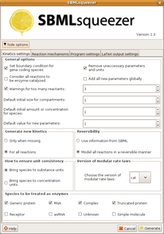

Generating kinetic equations for biochemical networks
Screenshots
The following figures show how to derive kinetic rate equations from an SBML file using SBMLsqueezer. For installation instructions see the documentation section or the tutorial [pdf].
SBMLsqueezer can be used in a stand-alone mode or as a plug-in in CellDesigner. In the stand-alone mode, its main window looks as follows:
{kind=link}
No matter how SBMLsqueezer has been started (from the CellDesigner plug-in menu or as a stand-alone program), it provides two ways to obtain kinetic equations for a given SBML model.
1 |
 | |||
2 |
||||
|
||||
{kind=link}
{kind=link}
The kinetic equations suggested by SBMLsqueezer can be altered by double clicking on the desired entry in the column “Kinetic Law” in the results table. After a single click on a formula in the “Formula” column a window with a preformatted formula appears. When finished the button “Export” allows to export the all generated kinetic formulas into a LaTeX or a plain text file for further processing.
{kind=link}
Alternatively, SBMLsqueezer also offers a context menu so that the user can generate kinetic equations one by one rather than for the whole network. Therfore, just right click on the desired reaction and a dialog box occurs:
{kind=link}
The dynamic behavior of this equation system can be simulated with an appropriate solver. The next picture shows the result of such a simulation within CellDesigner:
{kind=link}